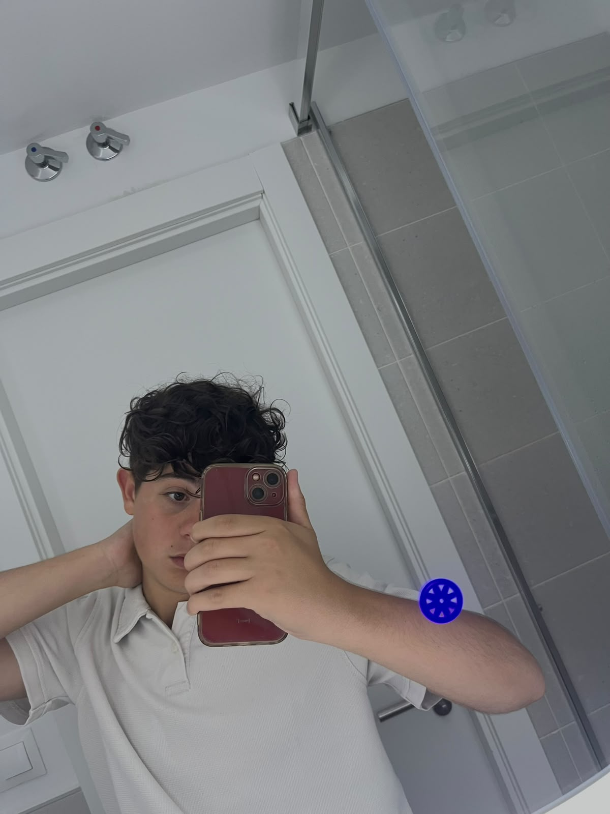

Ciao, sono Francesco Petti! Frequento il quarto anno all'ITT Panetti-Pitagora di Bari, indirizzo Informatica e Telecomunicazioni.
Il mondo della tecnologia mi affascina fin da quando ero bambino: quella che è nata come una semplice curiosità, oggi si sta trasformando nel mio obiettivo professionale.
Attualmente mi diverto a progettare e realizzare siti web curandone la struttura e lo stile (HTML e CSS), e sto costruendo delle solide basi di logica sviluppando programmi in C++.
Sono una persona molto curiosa e considero le mie competenze in costante evoluzione: mi piace mettermi alla prova con nuovi progetti per imparare ogni giorno qualcosa di nuovo e diventare, un domani, uno sviluppatore esperto.
